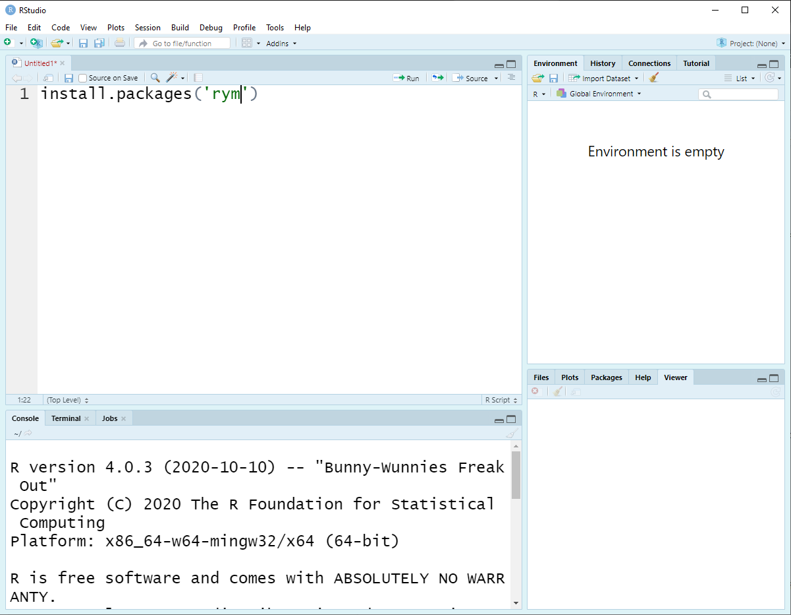
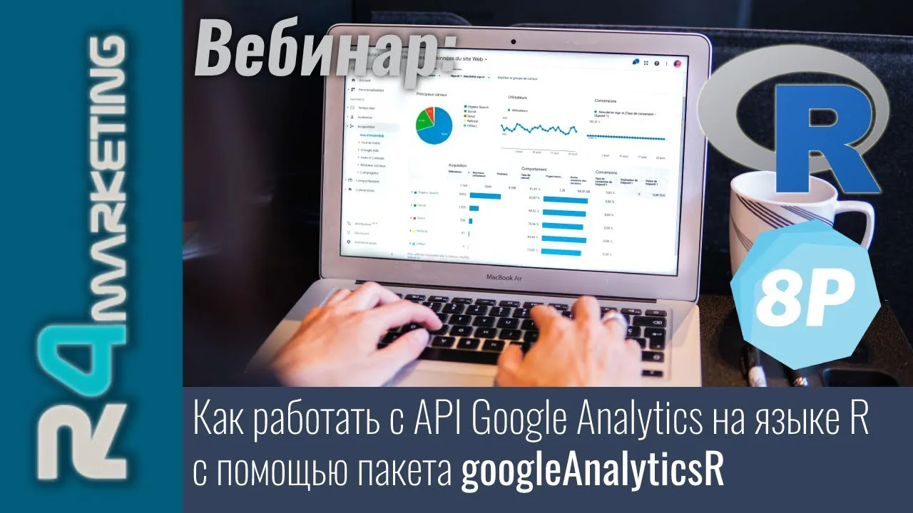
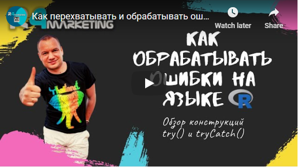
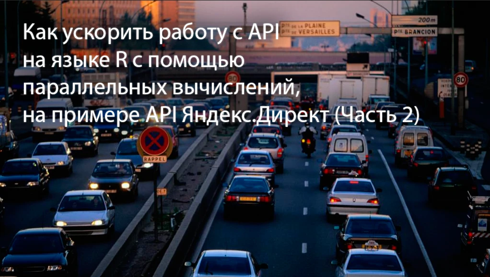
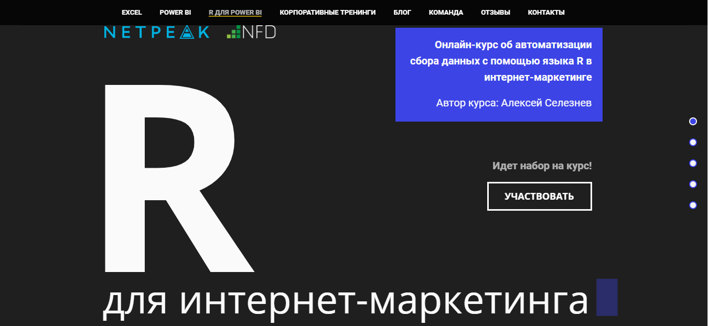
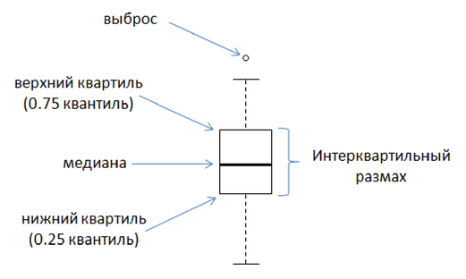
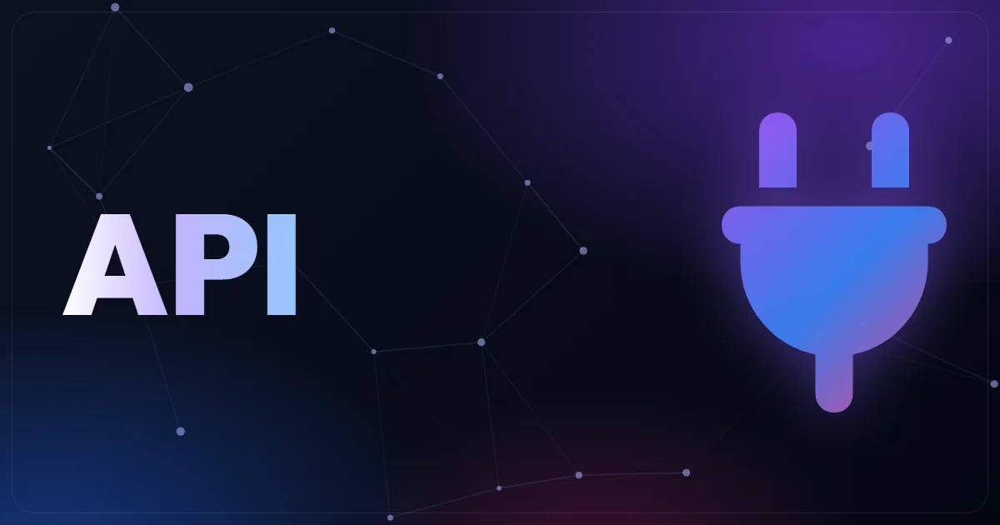
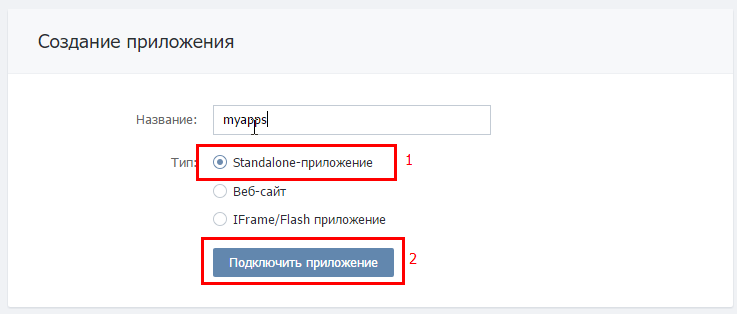
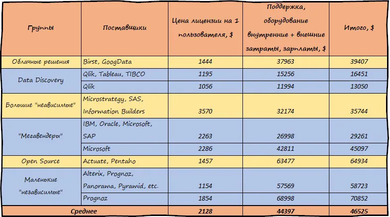
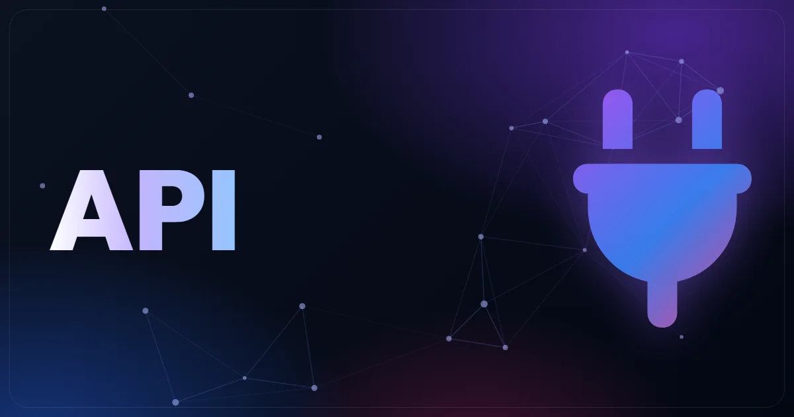

ПоказаноПоказаноShowing: 149 / 149
AcpGram теперь работает с OpenCode: можно пользоваться бесплатно и подключать практически любую модель
AcpGram 1.20.0 поддерживает OpenCode. Можно пользоваться бесплатно, без ключа и аккаунта, и подключать практически любую модель — через OpenRouter или ключи Anthropic, OpenAI, Gemini,…
Как работать с кодинг агентами (Claude Code, Codex, Gemini CLI, Antigravity CLI) через Telegram
Последние месяцы я всё чаще работаю с ИИ‑агентами для кодинга: Gemini CLI, Claude Code, Codex и Antigravity. Они невероятно хороши в решении сложных задач, но у них есть одно…
Как создать личный бренд в компании — кейс Алексея Селезнёва, руководителя отдела аналитики Netpeak
Бренд — образ компании, личности, который вызывает определенные ощущения, впечатления, создает настроение, чёткую ассоциацию с продуктом или услугой, определенной сферой деятельности.…

Как написать свой MCP сервер на языке R
Ранее я уже рассказывал про разработку AI чатов на языке R. Теперь сделаем шаг дальше. В этой статье мы разберем, как научить модель работать с вашими функциями и сервисами через MCP…

Как мы внедрили LLM в рабочие процессы аналитиков на R — и сделали это бесплатно
В этой статье расскажу, как мы в команде аналитиков начали использовать большие языковые модели (LLM) в повседневных рабочих инструментах. Всё построено на R, и покажу на практике, как…
Как настроить запуск R скриптов по расписанию с помощью GitHub Actions
В этом видео уроке я погружаюсь в мир непрерывной интеграции и развёртывания (CI/CD), а также расскажу, как автоматизировать запуск скриптов с помощью GitHub Actions. Я покажу способ,…

ChatGPT для аналитика данных. Пример успешных и не успешных кейсов использования в работе.
В этом видео я делюсь своим опытом использования ChatGPT 4 в работе. С мая 2024 года ChatGPT 4 стал доступен бесплатно, хоть и с ограниченным доступом, что позволяет нам исследовать его…

Воркшоп: Анализ показателя качества ключевых слов в Google Ads с помощью языка R и пакета rgoogleads
Воркшоп по работе с Google Ads API с помощью языка R и пакета rgoogleads. В ходе которого мы с нуля разберёмся как пройти авторизацию, запрашивать отчёты из Google Ads, и проанализируем…

Google BigQuery: Динамический UPSERT с помощью EXECUTE IMMEDIATE
Обычный паттерн обновления данных в BigQuery — добавление новых записей, даже если это означает дублирование данных. А затем обрабатывать дубликаты при чтении с помощью группировки или…
Как в Google Таблицу загрузить данные из Google BigQuery (видео урок)
Недавно в интерфейс Googlе Таблиц добавили меню “Коннекторы данных”. Пока там доступен только один нативный коннектор, к облачной базе данных Google BigQuery. Опубликовал видео обзор…

Пишем telegram бота на языке R (часть 5): Управление правами пользователей бота
В предыдущих статьях мы достаточно подробно разобрали тему ботостроения, от отправки первого сообщения до программирования логического диалога с ботом. Это последняя статья из данной…
Goodbye 2021
Сегодня предпоследний день уходящего 2021 года, а это значит пора собрать в кучу всё, что получилось успеть за этот год, и поделиться планами на следующий.

Доклад: Зачем интернет маркетологу понимать что такое API. Разбираем устройство API Google Ads (8P 2021)
В ходе доклада мы разберёмся с тем, как знания языков программирования облегчат работу маркетологу, разберёмся с устройством API одной из наиболее популярных в мире рекламных платформ…

Как загружать данные о расходах, офлайн-конверсиях и звонках в Яндекс Метрику
Весной 2020 года в Яндекс Метрике появился отчёт «Источники, расходы и ROI». Отчет автоматически посчитает ROI по всем рекламным источникам, при одном условии: вам необходимо передать в…

Пишем telegram бота на языке R (часть 4): Построение последовательного, логического диалога с ботом
Если вы уже ознакомились с предыдущими тремя статьями из данной серии, то вы уже умеете писать полноценных telegram ботов с клавиатурой. В этой статье мы с вами научимся писать бота,…

Пишем telegram бота на языке R (часть 3): Как добавить боту поддержку клавиатуры
Это третья статья из серии “Пишем telegram бота на языке R”. В предыдущих публикациях мы научились создавать телеграм бота, отправлять через него сообщения, добавили боту команды и…
Пишем telegram бота на языке R (часть 2): Добавляем боту поддержку команд и фильтры сообщений
В предыдущей публикации мы разобрались как создать бота, инициализировали экземпляр класса Bot и ознакомились с методами отправки сообщений с его помощью. В этой статье я продолжаю…

Шпаргалки: Манипуляция данными в R и Python
Мой telegram канал R4marketing совместно с каналом IT Resume подготовили набор шпаргалок, которые помогут быстро найти информацию и примеры кода по манипуляции данными на языке R и Python.

Доклад: Как работать с API Google Analytics на языке R с помощью пакета googleAnalyticsR (8P Online Edition 2020)
9 июля впервые конференция 8P прошла в online формате, в связи с Covid-19. На конференции я выступил с воркшопом, в ходе которого показал как с помощью языка R и пакета googleAnalyticsR…

Пишем telegram бота на языке R (часть 1): Создаём бота, и отправляем с его помощью сообщения в telegram
Аудитория telegram ежедневно растёт с геометрической прогрессией, этому способствует удобство мессенджера, наличие каналов, чатов, и конечно возможность создавать ботов. Боты могут…
Доклад: Как через R коннектор получить данные из Вконтакте в Power BI
В декабре 2020 года прошла вторая ежегодная конференция по построению продвинутых отчётов в Excel и Power BI. На которой я выступил с докладом “Как через R коннектор получить данные из…
Доклад: Учим язык R на примере SQL запросов (Product Star Conference)
Опубликовал запись своего доклада “Учим язык R на примере SQL запросов”, который я провёл в прошлую субботу в рамках конференции Product Star Conference. SQL знает любой программист, и…
Бесплатный онлайн учебник “Разработка Telegram ботов на языке R”
В августе – сентябре я опубликовал на Хабре серию статей о разработке telegram ботов на языке R. Теперь на основе этих статей я собрал онлайн учебник “Разработка Telegram ботов на языке…

Разворачиваем вложенные столбцы — списки с помощью языка R (пакет tidyr и функции семейства unnest)
В большинстве случаев при работе с ответом полученным от API, или с любыми другими данными которые имеют сложную древовидную структуру, вы сталкиваетесь с форматами JSON и XML. Эти…

Как работать с API Google Таблиц (Google Sheets API v4) на языке R с помощью нового пакета googlesheets4
Электронные таблицы по-прежнему остаются довольно популярным инструментом для работы с данными, а среди различных процессоров электронных таблиц наиболее популярными являются Google…

Видео урок: Как отлавливать и обрабатывать ошибки на языке R, конструкции try() и tryCatch()
Видео урок о том как обрабатывать ошибки на языке R с помощью конструкций try() и tryCatch().

Доклад: Разработка telegram бота для получения данных из Яндекс Метрики с помощью языка R (ZM CONF – 2, 27.08.2020)
Запись доклада с конференции ZM Conf – 2 которая прошла 27 августа 2020 года.

Язык R для аналитиков и интернет-маркетологов
Попросили руководителя отдела аналитики Netpeak, Алексея Селезнёва, рассказать про применение языка R в аналитике и интернет-маркетинге. Алексей является автором специализированных…

Как загрузить данные из API Google Analytics в R: часть 2
Несколько лет назад я уже рассказывал о том как работать с API Google Analytics на языке R с помощью пакета RGA. Пакет RGA всем хорош, но он работает только с Google Analytics Core…
Вебинар: Основы Python. Библиотека Pandas (29.07.2020)
Провели совместный с Productstar вебинар “Основы Python. Библиотека Pandas.”. Тезисы: Установим дистрибутив Anaconda Разберёмся с основными структурами данных в библиотеке Pandas…
Какой язык выбрать для работы с данными — R или Python? Оба! Мигрируем с pandas на tidyverse и data.table и обратно
По запросу R или Python в интернете вы найдёте миллионы статей и километровых обсуждений по теме какой из них лучше, быстрее и удобнее для работы с данными. Но к сожалению особой пользы…
Работа с датами на языке R (базовые возможности, а также пакеты lubridate и timeperiodsR)
Получить текущую дату в любом языке программирования, операция эквивалентная “Hello world!”. Язык R не является исключением. В этой статье мы разберёмся с тем, как устроена работа с…
Построение поведенческих воронок на языке R, на основе данных полученных из Logs API Яндекс.Метрики
Анализ воронки продаж — типичная задача для интернет маркетинга, и в частности электронной коммерции. С её помощью вы можете: Выяснить на каком из шагов к покупке вы теряете…
Видео запись R meetup: Чем нас порадует dplyr 1.0.0
Данный митап был организован Европейским Университетом в Спб. Посвящён митап новым возможностям популярного R пакета dplyr версии 1.0.0. В ходе митапа я провёл обзор 4 статей автора…
Python: Как создать оформленную HTML таблицу из pandas DataFrame
Как преобразовать pandas DataFrame в HTML таблицу для отправки электронном письме.
Взаимодействие R с базами данных на примере Microsoft SQL Server и других СУБД
Поскольку львиная доля бизнес информации храниться в базах данных. На каком бы языке программирования вы не писали, вам придётся производить различные действия с ними. В этой статье я…
Видео обзор: dplyr 1.0.0 перебор строк функцией rowwise()
Ещё один видео урок основанный на серии статей Хедли Викхема, посвящённой пре релизу пакета dplyr версии 1.0.0.

Видео обзор: Пре релиз dplyr 1.0.0 – функция across()
Данное видео представляет собой обзор пре релиза пакета dplyr версии 1.0.0. В видео продемонстрирована работа с новой функцией across(), которая упрощает обращение к столбцам внутри…

Видео обзор: dplyr 1.0.0 – select(), relocate(), rename_with()
В мае ожидается релиз dplyr 1.0.0, после чего интерфейс пакета практически не будет меняться. На данный момент новые функционал можно попробовать установив его dev версию.

Видео урок: Как загрузить статистику по рекламным аккаунтам, кампаниям, группам объявлений и объявлениям из Facebook Marketing API в Power BI с помощью языка R
В этом видео уроке мы разберёмся с довольно частой для интернет маркетинга задачей, а именно с тем, как загрузить данные о рекламных кампаниях из Facebook в Microsoft Power BI.
Доклад: Как держать руку на пульсе с помощью информационных дайджестов (GoAnalytics 2019)
Видео запись и презентация доклада с конференции GoAnalytics 2019.

ООП в языке R (часть 1): S3 классы
R — это объектно ориентированный язык. В нём абсолютно всё является объектом, начиная от функций и заканчивая таблицами. В свою очередь, каждый объект в R относится к какому-либо классу.…

rfacebookstat 2.0.0 | Обзор релиза и 6 видео уроков по работе с Facebook Marketing API на языке R
Последние несколько месяцев я много работал над функционалом пакета rfacebookstat, предназначенным для работы с Facebook Marketing API на языке R. В результате чего пакет был значительно…

Доклад: Как работать с Facebook Marketing API на языке R (Analyze Lviv 2019)
17 сентября 2019 года впервые одна из крупнейших конференций по аналитике в Украине, Analyze, прошла по Львове. Я также принял в ней участие, и выступил с докладом “Как работать с…
Что такое сквозная аналитика? (интервью)
Поучаствовал в опросе который проводил Павел Мрыкин из K50.

Как ускорить работу с API на языке R с помощью параллельных вычислений, на примере API Яндекс.Директ (Часть 2)
В прошлой статье я рассказал о том, что такое многопоточность, и привёл примеры её реализации на языке R при работе с API Яндекс.Директ с помощью пакетов doSNOW, doParallel и…
Доклад и мастер класс “Как маркетологу избавить от рутины с помощью языка R” (Матемаркетинг 2018)
Первый Матемаркетинг прошел в ноябре 2018 года, на котором я выступил с воркшопом и докладом “Как маркетологу избавить от рутины с помощью языка R”.

Аналитический инструмент для Concert.ua — контролируем рекламные бюджеты сотен мероприятий в реальном времени
Период продвижения: сентябрь 2016 года — по сегодня. Регион продвижения: Украина. Команда проекта: Илья Стрижак (Middle PPC-специалист), Андрей Коваль (тимлид команды PPC), Оксана…

R пакет tidyr и его новые функции pivot_longer и pivot_wider
Пакет tidyr входит в ядро одной из наиболее популярных библиотек на языке R — tidyverse.Основное назначение пакета — приведение данных к аккуратному виду. На Хабре уже…

Как ускорить работу с API на языке R с помощью параллельных вычислений, на примере API Яндекс.Директ (Часть 1)
Язык R на сегодняшний день является одним из мощнейших и многофункциональных инструментов для работы с данными, но как мы знаем практически всегда, в любой бочке мёда найдётся ложка…
Интервью: Тренды веб-аналитики 2019: ускоренные тестирования, борьба с дивергентностью и уважение к людям
В преддверие конференции “GoAnalytics 2019” SeoNews опубликовали интервью со спикерами, темой интервью была “Тренды веб-аналитики 2019: ускоренные тестирования, борьба с дивергентностью…
Вебинар: Сколько денег приносит ваш контент (Нетология 10.02.2019)
Корпоративному блогу Netpeak уже более 10 лет. За это время мы добились достаточно высоких результатов, блог является для нас мощнейшим инструментом продаж.
Наиболее простой способ обновить язык R (пакет installr)
Несколько раз в год выходят обновления для языка R, примерно раз в пол года выходят достаточно важные обновления. Для того, что бы не упустить последний функционал, и оптимизацию языка я…

Опрос: R и Python для гуманитариев и непрограммистов (Цифровой дискурс)
В декабре 2018 – феврале 2019 редакция Цифорого Дискурса провела опрос по теме сравнения сравнения двух наиболее популярных языков программирования, используемых в цифровых гуманитарных…
Доклад: Три шага для построения отдела аналитики компании (Lviv iCamp 2018)
Видеозапись доклада Алексея Селезнёва “Три шага для построения отдела аналитики в компании”.

Доклад: Как маркетологу избавиться от рутины с помощью языка R (Automation Day 2018)
Видео запись и материалы доклада “Как маркетологу избавиться от рутины с помощью языка R”. Конференция: Automation Day 2018
Дайджест обновлений R пакетов для интернет маркетинга – ryandexdirect, rfacebookstat, rvkstat, rym за март – декабрь 2018 года
Дайджест обновлений R пакетов для интернет маркетинга, rfacebookstat, ryandexdirect, rym, rvkstat и других, за март – декабрь 2018 года.

Зачем учить язык R интернет-маркетологу, и как сделать это максимально быстро
Друзья, у меня для вас хорошая новость: 1 ноября стартовал первый поток моего авторского онлайн-курса «Язык R для интернет-маркетинга». В этой статье я расскажу о том, когда и зачем я…

Насколько безопасно использовать R пакеты для работы с API рекламных систем
Последнее время мне довольно часто стали задавать вопрос о том, насколько безопасно использовать различные готовые расширения, т.е. пакеты, написанные для языка R, есть ли вероятность…
Интервью: Язык R в веб-аналитике и интернет-маркетинге
Маркетологи и аналитики все чаще обращаются к языку программирования R в повседневной работе. Зачем это нужно и какая польза от программирования на R в интернет-маркетинге, редакция…
Вебинар: Как автоматизировать работу с данными Яндекс.Метрики с помощью языка R и пакета rym (CyberMarketing)
Со временем, у многих бизнесов возникают вопросы, на которые нельзя ответить с помощью стандартного интерфейса отчётов Яндекс Метрики. Менеджменту, в свою очередь, часто нужны простые…
Вебинар: Как маркетологу избавиться от рутины с помощью языка R и наконец-то заняться маркетингом (WebPromo Experts)
Digital-маркетологи делают сотни рутинных действий каждый день, в то время как их доход очень часто напрямую зависит от соотношения “количество проектов / качество работы”. Я расскажу,…
rmytarget 2.0.1 – перевод пакета на работу с MyTarget API v2
Данное обновление связано с недавней новостью от поддержки API MyTarget, о том, что с 1 декабря 2018 года полностью прекращается поддержка API v1, а rmytarget изначально был написан…
Доклад: Язык R в маркетинге и бизнесе (Analyze 2018)
19 апреля я представил наше агентство на одной из самых больших конференций по аналитике — Analyze! Слушатели узнали о том, что такое язык R, как с его помощью можно решать задачи в…

Обзор R пакетов для интернет маркетинга, часть 1
Всем привет, если вы занимаетесь интернет маркетингом наверняка вам ежедневно приходится сталкиваться со множеством рекламных сервисов и как минимум одной платформой веб аналитики, если…

Как работать с API Яндекс.Метрики с помощью языка R
Такие платформы, как Google Analytics и Яндекс.Метрика — инструменты, которые ежедневно используют в своей работе тысячи интернет-маркетологов и веб-аналитиков. Если вы продвигаете пару…
Ивенты в которых я буду участвовать в ноябре / декабре 2018
Т.к. накопилось достаточно большое количество мероприятий в которых я буду принимать участие в ноябре и декабре текущего года, я решил собрать их анонсы в одну статью.
Новый способ авторизации в пакете rmytarge
Пакет rmytarget получил доступ к авторизации по схеме Code Grant, теперь работать через функции данного пакета вы можете даже если у вас нет доступа к API MyTarget.
Ошибки при установке R пакетов на Windows.
В большинстве случаев, особенно при установке пакетов из CRAN никаких проблем не возникает, но периодически всё таки вы можете столкнуться с некоторыми ошибками. В этой статье я со…

ryandexdirect 3.0.0 – обновлённый R клиент для работы с API Яндекс Директ
Пакет для работы с API Яндекс Директ на языке R, ryandexdirect был значительно доработан: Был улучшен процесс авторизации в API Приведёны в порядок имена аргументов функций Во все…

Сколько стоил клик Google AdWords и Facebook в Украине в первом квартале 2018 года
Здравствуйте! Продолжаем цикл ежеквартальных исследований стоимости клика в популярных рекламных площадках. Я подготовил для специалистов по контекстной рекламе исследование по стоимости…

Что такое язык R и как работать с API рекламных систем Google AdWords и Яндекс.Директ с его помощью
Если вы ведете несколько небольших рекламных кампаний в одном рекламном аккаунте, то для анализа их эффективности вам достаточно посмотреть нужные данные в Google AdWords / Яндекс.Директ…
Microsoft Power BI в интернет-маркетинге — дайджест полезных публикаций
В предыдущих статьях я рассказывал, как автоматизировать бизнес-процессы с помощью языка R. В этой подборке я решил структурировать материал о еще одном важном инструменте каждого…

Интервью для портала Цифровой Дискурс: Кто такие интернет-аналитики и какими инструментами они пользуются
Интервью для “Цифрового Дискурса”, портала посвящённого цифровым исследованиям. Пообщались на тему, кто такие веб-аналитики и какие инструменты они используют, в том числе затронули и…

Как с помощью Языка R, пакета ryandexdirect и LogsAPI Яндекс Метрики определить мошенничество CPA-сетей
Дмитрий Осиюк написал хорошую статью, о том как определить мошенничество CPA-сетей с помощью Logs API Yandex.Metrika и R.

Порция зимних обновлений пакетов ryandexdirect, rfacebookstat, rvkstat.
Статья – дайджест зимних обновлений R клиентов для работы с API Яндекс Директ, Facebook и Вконтакте. Честно говоря за зиму было не так много обновлений, но тем не менее возможности…

Загрузка статистики из «ВКонтакте» и Facebook в Google BigQuery — руководство
Вторая статья от ребят из eLama посвящённая загрузки данных из рекламных площадок в Google BigQuery, на этот раз Михаил Гусев написал подробную инструкцию о том, как получить данные из…
Доклад: Как разобраться со своими данными если ты не аналитик (eCommerce 2017)
Видео доклада “Как разобраться со своими данными если ты не аналитик”, конференция и выставка eCommerce 2017. (09.11.2017)

Партиционирование таблиц в Google BigQuery — понятная инструкция
Знаете, как максимально продуктивно и экономно работать с данными в Google BigQuery с помощью разделения больших таблиц на партиции? В этой статье я расскажу, как создавать партиции и…

Сколько стоил клик Google AdWords и Facebook в Украине в четвертом квартале 2017 года
Здравствуйте! Я подготовил для специалистов по контекстной рекламе итоговое исследование по стоимости клика за 2017 год на основании выборки проектов агентства Netpeak.
Как работать с закладками (bookmarks) в Power BI — подробное руководство
Недавно вышла очередная, ежемесячная порция обновлений Power BI Desktop. Разработчики добавили множество новых функций и значительно доработали «Закладки» (Bookmarks), с помощью которых…
rfacebookstat 1.5.0 – Как правильно использовать аргумент request_speed в функции fbGetMarketingStat.
rfacebookstat – R клиент для работы с API рекламного кабинета Facebook. В версии 1.5.0 была значительно улучшена основная функция пакета fbGetMarketingStat, в неё был добавлен…
В чём разница между командами library() и require() в R.
Вот уже почти как два года я ежедневно работаю с R, и когда пишу какой то скрипт наспех могу в нём использовать для подключения пакетов как команду library() так и require(), и раньше я…

Как мы сделали аналитический инструмент для блога Netpeak
Как узнать, хорошую ли статью вы опубликовали? Ok, допустим, существуют привычные метрики — проведенное на странице время, количество просмотров, количество репостов. Но это все-таки…
Ошибка SSL certificate problem при работе с пакетами RAdwords и RCurl
Уже несколько раз при работе с пакетом RAdwords я сталкивался с ошибкой SSL certificate problem, это означает что у вас какая то проблема с SSL сертификатами.
Все обновления пакетов ryandexdirect, rfacebookstat и rvkstat за осень 2017.
В этой статье я собрал все доработки R клиентов ryandexdirect, rfacebookstat и rvkstat за осень 2017 года.

Как начать работать с Google BigQuery
Ранее я публиковал цикл материалов о работе с Google BigQuery. В этой статье расскажу о преимуществах и особенностях сервиса, а также о дополнительных инструментах для BigQuery. Google…

Cколько стоил клик в Google AdWords, Яндекс.Директ и Facebook в Казахстане в третьем квартале 2017
Я подготовил ежеквартальное исследование о стоимости клика, опираясь на выборку проектов агентства Netpeak. Данные отчета будут полезны PPC-специалистам для планирования новых рекламных…

Сколько стоил клик в Google AdWords и Facebook в Украине в третьем квартале 2017
Я продолжаю исследовать данные о стоимости клика на основании выборки проектов агентства Netpeak. Надеюсь, отчет поможет специалистам по контекстной рекламе эффективно распределить…
Как развернуть phpPgAdmin и phpMyAdmin на Windows
Ни одно приложение и BI система на данный момент не может существовать без базы данных, наиболее популярными по крайней мере из бесплатных СУБД являются MySQL и PostgreSQL.

Как связать ВКонтакте и Power BI, R пакет rvkstat.
Несмотря на недавнюю блокировку соцсети в Индии, ВКонтакте продолжает оставаться огромным источником полезной информации и статистики. В этой статье я расскажу, как с помощью написанного…
R клиент для работы с API Вконтакте, пакет rvkstat 2.0.0
19 сентября вышел релиз пакета для работы с API Вконтакте rvkstat версии 2.0.0, текущая версия пакета содержит 26 функций.

Релиз версии 2.2.0 пакета ryandexdirect
Сегодня я добавил в пакет ryandexdirect 3 новые функции. yadirGetAdGroups – Получение списка групп объявлений yadirGetKeyWords – Получение списка ключевых слов yadirGetAds – Получение…

Как поменялись цены на рекламу после бана российских сайтов: блиц-опрос
Редакция информационного портала провела опрос среди экспертов в области интернет маркетинга, каждому из опрошенных экспертов было задано 3 вопроса: Как поменялись цены и…
Как загрузить статистику из рекламных систем в Google BigQuery
Антон Леонтьев из eLama на ppc.word поделился мануалом как с помощью написанных мной на языке R программных пакетов и некоторых других средств настроить сбор данных из Яндекс.Директа,…
Сколько стоил клик по рекламе AdWords и Директ в России во втором квартале 2017
Я продолжаю публиковать серию исследований по стоимости кликов в разных регионах, чтобы вы могли эффективно распределить рекламный бюджет.

Сколько стоил клик по рекламе AdWords и Директ в Казахстане во втором квартале 2017
Хотите узнать, сколько стоит клик в вашей тематике? Как эффективно распределить рекламный бюджет? В этом исследовании я изучил, сколько стоил клик в Google AdWords и Яндекс.Директ в…

Сколько стоил клик по рекламе AdWords, Директ и Facebook в Украине во втором квартале 2017
Уже традиционно начинаем квартал с исследования стоимости клика. На этот раз я исследовал 23 миллиона кликов из Украины в Google AdWords, Facebook, Директ и структурировал данные по 19…

Как получить данные из Google Analytics в R и загрузить в Power BI
В предыдущих статьях я неоднократно упоминал, что Google Analytics — отличный инструмент для сбора данных о посещениях сайта, но в плане визуализации данных, на мой взгляд, далеко не…

Как использовать прокси в скриптах R: обходим блокировку API Яндекса, Mail.ru и ВКонтакте
Если вы из Украины и до 16 мая использовали API Яндекса, Mail.Ru и ВКонтакте, то после этой даты, очевидно, столкнулись с определенными трудностями. В этой статье я расскажу, как обойти…

Автоматизация процесса коммуникации с клиентами.
Коммуникации с клиентами неотъемлемая часть любого бизнеса, наиболее важно это для B2B сегмента, и в целом для любого бизнеса с высоким LifeTime Value, у меня была задача…

Язык R в интернет-маркетинге — дайджест полезных публикаций
Недавно прошла конференция Analyze — и в этом году в каждом докладе прямо или косвенно упоминался язык R. Сегодня R стал универсальным средством автоматизации множества маркетинговых…

Исследование: Сколько стоил клик в Google AdWords в первом квартале 2017
Хотите узнать, где выгоднее всего рекламировать продукты или планируете рекламный бюджет? Я провел анализ стоимости клика в 25 тематиках и 852 городах Украины, России, Казахстана,…
2ое место на конкурсе Analytical challenge
20 апреля 2017 года в рамках конференции Analyze проходил конкурс аналитических идей “Analytical challenge!” в котором я принял участие с докладом “BI решение для отдела контекстной…
Как сэкономить время специалиста при работе с крупным проектом — на примере OLX
«Что мы делаем со временем? В ответе на этот вопрос состоит смысл жизни», — считает герой фильма «Молодость без молодости». Что делают большую часть времени специалисты по контекстной…
Новая книга по R: “Классификация, регрессия и другие алгоритмы Data Mining с использованием R”
Сегодня 7 апреля 2017 года Сергей Мастицкий, автор нескольких книг по языку R и блога r-analytics.blogspot.com объявил на странице сообщества “Анализ и визуализация данных” в Facebook о…

Как настроить отправку писем с помощью языка R
Хотите оперативно и своевременно узнавать о сбоях в работе скриптов R? Достаточно настроить оповещения на email. В этой статье я опишу, как настроить рассылку с помощью языка R и как…
В пакет ryandexdirect добавлена возможность работы с сервисом Reports, и возможность загрузки справочной информации.
1. Релиз сервиса Reports и возможность работы с ним из ryandexdirect. 22 марта 2017 года в официальном блоге Яндекс Директ был объявлен релиз сервиса Reports.
Как cделать красивую визуализацию в Google Data Studio
Мы уже писали, как собирать и визуализировать данные с помощью Power BI, а теперь появилась возможность сравнить его с Google Data Studio, который стал доступен практически во всех…

Как связать Яндекс.Директ с Microsoft Power BI.
Яндекс.Директ собирает много данных, но, к сожалению, в веб-интерфейсе доступно очень мало информации для анализа. В этой статье я подробно опишу, как получить статистику о рекламных…

Как разработать графический интерфейс для скриптов R?
Хотите, чтобы ваши R-скрипты могли запускать пользователи без навыков программирования? Создайте понятное десктопное приложение. Язык R предназначен преимущественно для Back End…

Как получить и обработать сырые данные из Яндекс.Метрики
Хотите качественно анализировать статистику из Яндекс.Метрики? Отследить сложные воронки продаж, объединить данные из разных систем аналитики, контролировать расхождения в статистике, —…

Сколько стоил клик в Google AdWords в четвертом квартале 2016
Сколько платят рекламодатели за клик по объявлениям в разных странах и тематиках? Я провел очередное исследование стоимости клика в Google AdWords и в этой статье поделюсь результатами…
Сколько стоил клик в AdWords в 2016 году — данные по Болгарии, Казахстану, России, Украине
Хотите планировать рекламный бюджет больше, чем на месяц или два? Вам необходимо знать стоимость клика и спрогнозировать, как будет меняться цена. В течение 2016 года я собирал данные о…
Что делают интернет-маркетологи под Новый год?
Как провести последнюю неделю декабря и первую неделю января так, чтобы год прошел максимально эффективно — интернет-маркетологи делятся опытом.

Как мы внедрили BI-аналитику в отделе контекстной рекламы
Хотите, я скажу, что делают ваши сотрудники прямо сейчас? Собирают вручную отчеты в электронных таблицах. Сколько времени они тратят зря, игнорируя автоматизацию? Увидеть реальную…

Как загрузить статистику рекламных кампаний из API Facebook с помощью языка R
Популярность Facebook как рекламной площадки стремительно растет, но анализировать статистику в рекламном кабинете неудобно. Один из альтернативных способов — загрузить статистику в R…
Как настроить запуск R-скрипта по расписанию?
С помощью скриптов R можно быстро и бесплатно собирать данные из API различных сервисов или рекламных площадок и записывать их в базу данных. Но если вы регулярно пользуетесь скриптами,…

Продвижение интернет-магазина с помощью Google AdWords: первые шаги
Какие инструменты включать при запуске рекламных кампаний, а какие использовать для масштабирования? Если вы не опытный PPC-боец, ответить на эти вопросы сложно.

Сколько стоил клик в Google AdWords в третьем квартале 2016
Хотите узнать, сколько стоит клик в вашей тематике? Как эффективно распределить рекламный бюджет? В этом исследовании я изучил, сколько стоил клик в Google AdWords в третьем квартале…

Как связать Microsoft Power BI и Google BigQuery
Если вы храните данные в Google BigQuery, то наверняка захотите визуализировать их. В этой статье я расскажу, как загрузить данные из Google BigQuery в Microsoft Power BI с помощью…

Что дешевле в Украине: AdWords или Директ — исследование Netpeak
Для многих специалистов этого вопроса вроде как и не существует. Google в Украине популярнее, значит конкуренция выше и клик дороже — о чем еще говорить? Но насколько популярнее Google в…

Сколько стоил клик в Google AdWords во втором квартале 2016
Хотите узнать, где выгоднее всего рекламировать ваш товар или планируете рекламный бюджет? Я проанализировал более 7 миллионов кликов и посчитал, во сколько обходятся рекламодателям…

Как визуализировать показатель качества ключевых слов — рецепт скрипта на языке R
Хотите быстро определить слабые места ваших рекламных кампаний? Используйте понятные и удобные графики со сводкой информации о составляющих показателя качества ключевых слов. В этой…

Как оценить потерянный доход в Google AdWords с помощью языка R
Сколько прибыли вы не получили в Google AdWords из-за нехватки бюджета или низкого рейтинга ключевых слов? Стандартные отчеты не позволяют это проанализировать, но я знаю способ, как…

Кейс: как провести анализ конкурентов с помощью SimilarWeb
Какие каналы используют конкуренты для привлечения посетителей? В каких регионах наибольшая и наименьшая конкуренция? Перед запуском проекта нужно знать предельно четкие ответы на эти…

Как работать с Microsoft Power BI
Чтобы создавать понятные отчеты и обновлять их в режиме реального времени современному бизнесу необходим мощный сервис для обработки информации. В комментариях к моим предыдущим…

Сколько стоил клик в Google AdWords в первом квартале 2016 — исследование Netpeak
Сколько средств нужно вложить в рекламу для привлечения клиента? Спрогнозировать это просто, если знаете коэффициент конверсии и среднюю стоимость клика в вашей тематике и регионе. Чтобы…

Как загружать данные в Google BigQuery.
Все говорят о BigData, необходимости анализировать большие объемы информации, но при этом не знают, как обрабатывать данные, и не решаются сделать первые шаги. В этом посте мы расскажем…

Как строить диаграммы в отдельных ячейках Excel и таблицах Google
Когда приходится анализировать большие таблицы или делать выводы сразу по нескольким строкам с данными, классические диаграммы не спасают. Они громоздкие и неудобные. Но в Excel и Google…

Как обрабатывать данные из множества таблиц в Google BigQuery.
В прошлой статье я рассказывал об оконных функциях в Google BigQuery. Сегодня рассмотрим функции подстановки таблиц. Здесь всё проще.;

Как внедрить Business Intelligence для малого и среднего бизнеса
Даже небольшим предприятиям для оптимизации своей работы приходится анализировать много источников информации. Чтобы упростить рутинную работу и свести различные данные в визуально…
Как работать с оконными функциями в Google BigQuery — подробное руководство
Количество данных стремительно растет. Растет и интерес к сервисам для их хранения и обработки. Один из сравнительно новых и качественных инструментов в области хранения и обработки…

Как работать с Excel в рекламной кампании — дайджест публикаций Алексея Селезнева
В последнее время я и Андрей Коваль делились лайфхаками по работе с редакторами электронных таблиц для PPC-специалистов. Я старался писать по делу, но все равно получился довольно…

Интеграция Google BigQuery c BI-платформами и электронными таблицами
С каждым годом количество данных в различных базах растет в геометрической прогрессии — этот фактор определяет интенсивный рост интереса к Big Data. Сегодня облачная база данных Google…

Как выбрать инструмент для импорта данных из Google Analytics
В октябре-январе я опубликовал в блоге серию мануалов о том, как выгрузить данные из Google Analytics в Excel и Google Spreadsheets. Один из читателей задал вопрос, как из всех описанных…

Всемогущая функция Query — подробное руководство
Думаю, все слышали о правиле Парето. В любой сфере 20% усилий дают 80% результата. Например, 20% своего гардероба вы носите 80% времени, 20% ваших клиентов приносят 80% дохода. Так же и…
Как построить диаграмму и не облажаться
В этой статье я поделюсь теорией, которая помогает здорово экономить время. Особенно, если вам как минимум раз в день необходимо показывать коллегам или руководству данные аналитики в…

Как мы сделали инструмент веб-аналитики для сайта Ecommerce
В этом посте я подробно расскажу, зачем бизнесу собственный веб-аналитический инструмент, и приведу пример сделанного нами продукта. Но прежде давайте на секунду отвлечемся и рассмотрим,…

Как построить сводные таблицы в Excel, LibreOffice, OpenOffice и таблицах Google
В предыдущих публикациях я поделился информацией о том, как импортировать данные из Google Analytics в различные процессоры электронных таблиц (мы рассматривали импорт в Google таблицы и…

Прогнозируем поисковую активность в Яндексе с помощью Wordstat и Google Таблиц
Для правильного планирования бюджета на рекламную кампанию нам необходимо понимать, как в ближайшие несколько месяцев будет меняться поисковая активность пользователей. В этой статье я…

Как импортировать данные из Google Analytics в Excel с помощью Excellent Analytics
В предыдущих постах из серии «О работе в Excel для специалистов по контекстной рекламе» я рассказывал о дополнении Google Analytics для Google Таблиц и возможностях надстройки Analytics…
Инструкция: Как и зачем использовать сводные таблицы в интерфейсе Google AdWords
Встроенные в интерфейс Google AdWords отчёты конечно достаточно информативны и дают поверхностное понимание эффективности рекламных кампаний и групп объявлений, но для глубоко погружения…

Веб-аналитика Импорт данных из Google Analytics в Excel с помощью Analytics Edge
В прошлой статье я рассказывал о том, как настраивать визуализацию с помощью Google Таблиц, если вы столкнулись с ограничениями Google Analytics. В этом посте речь пойдет о том, как…

Дополнение Google Analytics для Google Taблиц — полное руководство
Если вы столкнулись с ограничениями по визуализации данных в Google Analytics, эта статья именно для вас. Во время работы в интерфейсе Google Analytics специалисты рано или поздно…

Лайфхак: бесплатная автоматическая отчетность по контекстной рекламе
Отчет по ключевым показателям эффективности Одному из клиентов нам нужно было предоставлять еженедельный отчет по ключевым показателям эффективности. В качестве KPI клиент обозначил:…
Анализ потерянных конверсий — полное руководство
Вы знали, что в Google AdWords можно посмотреть, сколько конверсий и, соответственно, транзакций было потеряно? Конечно, большинство слышат об этом впервые, так как в стандартных отчетах…

Когортный анализ в Google Analytics: пошаговая инструкция
Сегодня нет инструмента, с точностью до сотых измеряющего влияние той или иной тактики продвижения на лояльность пользователя. Да что говорить, если даже долговременный эффект от…
Первая запись в блоге|Знакомство
Всем привет, меня зовут Алексей Селезнёв, на данный момент я возглавляю отдел аналитики в агентстве интернет маркетинга Netpeak, но обо мне более подробно можно узнать на странице “Об…
Ничего не найдено — попробуйте изменить фильтр или запрос.Нічого не знайдено — спробуйте змінити фільтр або запит.Nothing found — try another filter or query.